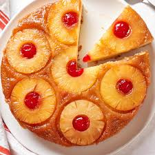

Home
Pineapple Upside Down Cake

Description
Pineapple upside-down cake is a moist, tender dessert that starts with a layer of pineapple slices and cherries coated in rich caramelized brown sugar and butter.
The cake batter is poured on top and baked until golden, then inverted after baking to showcase the glistening fruit topping. Its tropical sweetness and striking
presentation make it a timeless favorite for gatherings and celebrations.
Ingredients
- Butter
- Brown sugar
- Pineapple slices
- Cherries
- Flour
- Baking powder
- Salt
- Granulated sugar
- Eggs
- Vanilla extract
- Milk
- Pineapple juice
Steps
- In a medium bowl, whisk together the flour, baking powder, and salt.
- In a separate large bowl, cream the softened butter and sugar until light and fluffy.
- Beat in the eggs one at a time, then mix in the vanilla.
- Add the dry ingredients in two additions, alternating with the milk and pineapple juice, mixing just until combined.
- Melt the butter and pour it into the bottom of a round cake pan (9-inch works well).
- Sprinkle the brown sugar evenly over the butter.
- Arrange pineapple slices on top of the sugar-butter layer, placing a cherry in the center of each ring if desired.
- Pour the batter over the arranged pineapple slices, spreading evenly.
- Bake in a preheated oven at 350°F (175°C) for 35–40 minutes, or until a toothpick inserted in the center comes out clean.
- Let the cake cool in the pan for about 10 minutes.
- Run a knife around the edges to loosen, then invert the cake onto a serving plate.